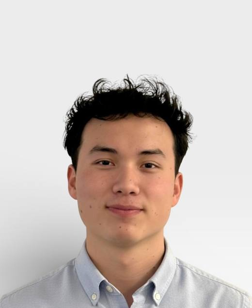

ESILV × Institute for Future Technologies · Paris
PaulSimonet
Creative technologist
Élève-ingénieur en dernière année, j'aime les projets où la matière, l'électronique et le code se croisent. J'ai fait pousser des panneaux en mycélium, installé des stations météo en Martinique et lancé un décapsuleur financé sur Kickstarter. Je cherche un stage de fin d'études en R&D ou en prototypage.
↳ Le fond est une culture de mycélium simulée : bougez pour la guider, cliquez pour ensemencer.Le fond est une culture de mycélium simulée : touchez pour ensemencer.

Projets
Pleurotus ostreatus · Ganoderma lucidum · BA13 12,5 mm
Peut-on remplacer la plaque de plâtre par du mycélium ?
Trois bancs d'essai construits pour l'occasion : une hotbox en XPS, un test flamme au chalumeau suivi au pyromètre, et un test d'immersion.
La réponse dépend du substrat. Sur grains, le mycélium garde un cœur presque sec là où le plâtre sature.
Sous 60 secondes de flamme, le BA13 perd 3,1 % de sa masse et le mycélium sur grains 5,6 %. Sur copeaux de bois, c'est autre chose : jusqu'à 62 %, et un échantillon a continué de brûler seul. Le dos du BA13, lui, a continué de chauffer après la flamme, jusqu'à 76,6 °C.
Mesures toutes les 7 s, affichées toutes les 35 s. Limite : l'échantillon de mycélium faisait 18 mm contre 12,5 mm pour le BA13, ce qui avantage le biomatériau.
Parcours
Formation & expériences- 2022 → 2027MSc Ingénierie & Management, double diplômeESILV / EMLV, Paris La Défense
- 2025 → 2027Majeure Creative TechnologyInstitute for Future Technologies, De Vinci Higher Education · How to Make (Almost) Anything, projets d'innovation
- Avr. – juil. 2026Stagiaire ingénieur R&D, MyGwave × Ville du LamentinMartinique · stations météo, pipeline de données Python et tableau de bord, prototypes solaires autonomes, avec le FabLab La Sphère
- Juin – juil. 2024Assistant ingénieur, HEPER Coordination IngénierieParis · suivi de chantier sur le projet Fondation Cartier
- 2024Échange internationalDorset College, Dublin
Code
- C++
- Python (Pandas)
- Nettoyage de données
- C#
- SQL
Embarqué
- ESP32
- Arduino
- KiCad
- Intégration de capteurs
- Soudure
Fabrication
- SolidWorks
- Fusion 360
- Impression 3D
- Usinage CNC
- Découpe laser
Matériaux
- Composites mycéliens
- Plans d'expérience
- Bancs d'essai
Langues
- Français (natif)
- Anglais (courant, C1)
Hors du labo
Escalade · montagne · assoAvec Léo Climb, l'association d'escalade que j'ai rejointe, j'ai organisé une compétition de bloc qui a réuni plus de 150 étudiants venus de 8 écoles d'ingénieurs.
Bénévole à La Balade des Lucioles ↗, association parisienne : nous redistribuons chaque semaine plus de 50 repas à partir d'invendus.